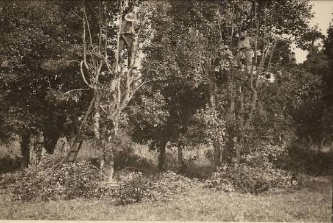
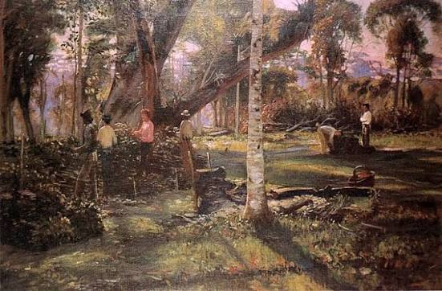

Historia da Erva-Mate
Antes mesmo de o Paraná existir no mapa, a erva-mate (Ilex paraguariensis) já era sagrada para os povos originários Guarani e Kaingang, que nos ensinaram os segredos e os rituais dessa planta nativa. No século XIX, o mate transformou-se no grande motor econômico do estado. Foi a riqueza gerada pelos ervais que impulsionou a emancipação política do Paraná em 1853, financiou a construção de marcos como a Estrada da Graciosa e a ferrovia Curitiba-Paranaguá, e moldou as cidades paranaenses. Mais do que um ciclo econômico, a erva-mate uniu tropeiros e imigrantes europeus em torno de uma mesma tradição. Hoje, estampada na própria bandeira do estado, ela representa a hospitalidade e a essência do nosso povo — seja na cuia de chimarrão, no copo de tereré ou na mesa de cada paranaense.

contexto histórico
Quando: A tradição começou séculos atrás com os povos originários, mas estourou comercialmente no século XIX. Foi a riqueza da erva-mate que garantiu a emancipação política do Paraná em 1853, mantendo o estado no topo da economia até meados de 1930. Onde: A planta era colhida nas florestas nativas do interior paranaense (como Campos Gerais e Região de Curitiba), processada nos engenhos da capital e de Morretes, e depois descia a serra — pela Graciosa ou de trem — rumo ao Porto de Paranaguá para ser exportada. Como: Tudo partiu do conhecimento ancestral dos Guarani e Kaingang. A partir daí, a extração artesanal se transformou em uma grande indústria de secagem e moagem. O convívio entre tropeiros e colonos europeus nos ervais espalhou o hábito do chimarrão, transformando a bebida no maior símbolo da cultura e da hospitalidade do Paraná.

importancia cultural
# A Importância da Erva-Mate na Identidade Paranaense A erva-mate é a verdadeira espinha dorsal da cultura do Paraná. Herança sagrada dos povos Guarani e Kaingang, a planta foi a principal riqueza responsável por financiar a emancipação do estado em 1853 e impulsionar seu desenvolvimento. Ao unificar o convívio de indígenas, tropeiros e imigrantes, o mate ultrapassou a economia para moldar o estilo de vida local. Presente no chimarrão diário e estampada na própria bandeira estadual, a erva-mate é o maior símbolo da história, do pertencimento e da hospitalidade do povo paranaense.

curiosidades
curiosidade 1
Foi o "Ouro Verde" que pagou a independência do Paraná Antes de 1853, o Paraná não era um estado, mas sim a quinta comarca da Província de São Paulo. O grande motor econômico que deu autonomia e riqueza à região para que ela conquistasse sua emancipação política foi justamente o ciclo do mate. A erva-mate representava quase toda a pauta de exportação do Paraná no século XIX, trazendo tanto dinheiro e influência que os grandes produtores e comerciantes do produto ficaram conhecidos como os "Barões do Mate".
curiosidade 2
De "erva do diabo" a bebida oficial das tropas Quando os colonizadores espanhóis e jesuítas chegaram à região (que hoje compreende o Paraná, Santa Catarina e Paraguai), viram os indígenas Guaranis consumindo a infusão das folhas da árvore. Nos primeiros anos de colonização, a Igreja Católica chegou a proibir o consumo do mate, chamando-o de "erva do diabo" ou "vício abominável", temendo que o hábito associasse os fiéis aos rituais pagãos. No entanto, o consumo era tão forte e trazia tanta energia para os trabalhadores que a própria Igreja voltou atrás, passou a cultivar a planta e transformou o mate em uma das maiores fontes de renda das missões jesuíticas.